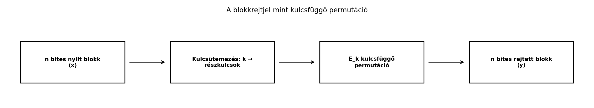

Amikor a böngészőnk HTTPS-en megnyit egy weboldalt, a kapcsolat titkosításához a TLS 1.3 szinte mindig az AES blokkrejtjelt használja. A könyvtár azonban nem az AES függvényt hívja közvetlenül, hanem egy hitelesített titkosítási üzemmódot, például az AES-GCM-et. Miért? Mert az AES önmagában nem titkosítási séma. Az AES egy blokkrejtjel: egy rögzített méretű, 128 bites blokkot permutál egy kulcs segítségével. Ha egy üzenet hosszabb, mint egy blokk, vagy ha ismétlődő blokkokat tartalmaz, a blokkrejtjel közvetlen használata súlyos információszivárgáshoz vezet. Ebből az alfejezetből megértjük, mi a blokkrejtjel mint kulcsolt permutáció, mit jelent a pszeudovéletlen permutáció intuitív fogalma, és miért kell a blokkrejtjel köré mindig üzemmódot építeni.
A blokkrejtjel olyan, mint egy kulccsal vezérelt doboz, amely az bites bemenetet bites kimenetre képezi le úgy, hogy a leképezés minden kulcs esetén megfordítható.

A doboz bemenete az nyílt blokk, kimenete az rejtett blokk. A kulcsütemezés a főkulcsból a belső körök számára részkulcsokat készít. A visszafejtő doboz ugyanezt a permutációt fordítva hajtja végre, ezért minden rejtett blokk egyértelműen visszafejthető.
Definíció. Egy bites blokkméretű, bites kulcsméretű blokkrejtjel (block cipher) egy pár, ahol
a kulcstér , azaz , és minden kulcs esetén az
leképezés permutáció, továbbá az inverze:
Megjegyzés. A blokkrejtjel tehát minden rögzített kulcsra egy permutációt valósít meg, ezért hívjuk kulcsolt permutációnak (keyed permutation). A visszafejtő függvény is permutáció, mégpedig az inverze. A gyakorlatban és külön, de egymáshoz illesztett algoritmussal valósul meg.
A blokkrejtjel determinisztikus: ha ugyanazt a kulcsot és blokkot használjuk, a kimenet mindig ugyanaz. Ez a determinizmus később, az üzemmódoknál központi szerepet kap.
Képzeljük el az ideális blokkrejtjelt: minden kulcs egy-egy véletlenül választott permutációt jelöl ki az összes bites permutáció halmazából. Az bites permutációk száma , ami már esetén is elképzelhetetlenül nagy. Egy valódi blokkrejtjel ennél sokkal szerényebb: a kulcstér mérete , tehát legfeljebb darab permutációt tud kijelölni.
A pszeudovéletlen permutáció (pseudorandom permutation, PRP) intuitív követelménye éppen az, hogy ez a szűkebb, méretű család megkülönböztethetetlen legyen a teljes permutációhalmazból egyenletesen választott véletlen permutációtól. Ha egy támadó tetszőlegesen kérdezheti az függvényt, és nem tudja hatékonyan eldönteni, hogy a valódi blokkrejtjellel vagy egy igazi véletlen permutációval beszél-e, akkor a blokkrejtjel PRP-biztonságos.
Továbbvitt eredmény. A PRP formális definícióját, a megkülönböztetési játékot és a kapcsolódó bizonyítási technikákat a PRF, PRP, switching-lemma és Luby–Rackoff alfejezetben tárgyaljuk részletesen.
Itt most csak a képet rögzítjük: a jó blokkrejtjel kulcsfüggő permutációi „véletlenszerűnek látszanak” annak ellenére, hogy a kulcstér sokkal kisebb, mint a permutációk halmaza.
Példa (mini blokkrejtjel). Vegyünk egy bites blokkméretű, bites kulcsméretű oktatási blokkrejtjelt:
Ez valóban blokkrejtjel, mert minden rögzített -ra az hozzárendelés bijekció a halmazon. Például és esetén
tehát . A visszafejtés . Ez a példa jól mutatja a permutáció tulajdonságot, de természetesen nem biztonságos, mert a leképezés lineáris.
Példa (AES-128 tesztvektor). A valódi AES-128 blokkrejtjel bites blokkokat és bites kulcsokat használ. A NIST FIPS 197 szabvány egyik ismert tesztvektora (ellenőrzési igény: a pontos szabványszakasz-szám itt nincs megadva):
0x000102030405060708090a0b0c0d0e0f0x00112233445566778899aabbccddeeff0x69c4e0d86a7b0430d8cdb78070b4c55aUgyanezzel a kulccsal a visszafejtés a rejtett blokkból visszaadja a nyílt blokkot. Az AES tehát egyetlen 128 bites blokkot permutál; a 16 bájtos bemenethez 16 bájtos kimenet tartozik, és a hozzárendelés kulcsonként bijekció.
A blokkrejtjel biztonsági korlátai két, egymástól független paramétertől függenek: a blokkmérettől és a kulcsmérettől.
A kulcsméret a nyers erővel szembeni ellenállást határozza meg. Egy bites kulcs esetén a támadónak átlagosan próbálkozásra van szüksége a kulcs kipróbálásához. Az 56 bites effektív kulcsú DES (a 64 bites kulcsformátumból 8 bit paritásbit) ma már túl gyenge, mert a kulcs kipróbálása célhardverrel megvalósítható (a pontos időadatot lásd a 10.3 alfejezetben, ellenőrzési igénnyel); a 128 bites kulcs viszont átlagos munkát igényel, ami a mai technológiával elérhetetlen.
A blokkméret a születésnapi korlátot határozza meg. Ha egy blokkrejtjelt egyetlen kulccsal sok blokk titkosítására használunk egy üzemmódban (például CBC-ben), akkor a blokkrejtjel véletlenszerűnek tekinthető bemenetei között ütközés léphet fel. Mivel permutáció, különböző bemenetekhez sosem tartozik azonos kimenet; az ütközés tehát az üzemmód bemeneti blokkjai között jelentkezik, és a megfelelő rejtett blokkok egyezése két nyílt blokk XOR-ját szivárogtatja. Az bites blokkok esetén blokk titkosítása után az ütközés valószínűsége körülbelül
Ezért a értéknél az ütközés valószínűsége már körülbelül . A 64 bites blokkméret esetén ez blokk, ami bájt, azaz körülbelül 32 GiB adat. Ennyi titkosított adat egyetlen kulccsal már reális egy nagy forgalmú szerveren. A 128 bites blokk esetén a küszöb blokk, ami bájt, tehát gyakorlatilag elérhetetlen.
Továbbvitt eredmény. A blokkméretből adódó pontos kulcshasználati korlátokat és az üzemmódok biztonsági képleteit a Konkrét biztonság és üzemmódok biztonsági korlátai alfejezetben számítjuk ki.
A 64 bites blokk problémáját a Sweet32 támadás tette széles körben ismertté. A támadás a 64 bites blokkméretű CBC üzemmódú rejtjeleket, például a 3DES-t célozza. Nagy mennyiségű forgalom mellett a születésnapi ütközések lehetővé teszik, hogy a támadó cookie-kat vagy hitelesítő adatokat fejtsen vissza. A támadás neve is utal arra, hogy a blokk elérése nagy, de valós hálózati forgalom mellett lehetséges. A javaslat egyértelmű: 64 bites blokkméretet ne használjunk, váltsunk 128 bites blokkméretű rejtjelre, például AES-re.
A blokkrejtjel belső szerkezete általában több körből áll; minden kör egy-egy részkulcsot használ. A kulcsütemezés (key schedule) az a determinisztikus eljárás, amely a bites főkulcsból előállítja a körökben használt részkulcsokat.
A jó kulcsütemezésnek az a célja, hogy a főkulcs minden bitje sok részkulcsba keveredjen, és a részkulcsok minél függetlenebbnek tűnjenek. Ha a kulcsütemezés gyenge, akkor a körök közötti összefüggések lehetővé tehetik a kulcs visszanyerését. A DES 56 bites kulcsból 16 darab 48 bites részkulcsot generál. Az AES a 128 bites kulcsból 10 körhöz 11 darab 128 bites körkulcsot, a 192 bites kulcsból 12 körhöz 13 darabot, a 256 bites kulcsból 14 körhöz 15 darabot állít elő.
A visszafejtéshez ugyanazokat a részkulcsokat kell használni, általában fordított sorrendben; ezeket ugyanaz az előre irányú kulcsütemezés állítja elő, így az ütemezés megfordíthatóságára (részkulcsból főkulcs) nincs szükség. A gyakorlatban a kulcsütemezést egyszer elvégzik, és a részkulcsokat a titkosítás és visszafejtés során újra felhasználják.
A blokkrejtjel önmagában primitív, nem titkosítási séma. Négy alapvető hiányossága van:
Determinisztikus. Ugyanaz a nyílt blokk ugyanazzal a kulccsal mindig ugyanazt a rejtett blokkot adja. Ha az üzenet ismétlődő blokkokat tartalmaz, a rejtett szöveg is ismétlődik, ami mintázatot szivárogtat. Ez sérti a szemantikai biztonságot.
Csak rögzített hosszúságú blokkot tud kezelni. Az üzenet hossza általában nem pontosan bit, ezért szükség van feldarabolásra és kitöltésre, vagy más szerkezetre.
Nem biztosít integritást. A blokkrejtjel invertálható leképezés, de a rejtett blokk módosítása nem feltétlenül észlelhető. A támadó a rejtett blokkokat törölheti, átrendezheti vagy lecserélheti anélkül, hogy a vevő észrevenné.
Nincs véletlenség. A szemantikai biztonsághoz szükséges, hogy ugyanaz az üzenet különböző titkosítások során más-más rejtett szöveget kapjon. A blokkrejtjel önmagában nem tartalmaz véletlenszerű elemet.
Továbbvitt eredmény. Az üzemmódok szükségességét, az ECB mód hibáit és a helyes konstrukciókat a ECB és CBC üzemmód alfejezetben tárgyaljuk részletesen.
Ezek a hiányosságok vezetnek az üzemmódokhoz (mode of operation), amelyek a blokkrejtjelt többlépéses eljárással tetszőleges hosszúságú üzenetek titkosítására teszik alkalmassá, véletlenséget visznek be, és gyakran hitelesítést is adnak.
A blokkrejtjel gyakorlati jelentőségét jól mutatja, hogy a modern processzorok dedikált AES-utasításokat tartalmaznak. A x86 és ARM processzorok többsége rendelkezik olyan hardveres utasításokkal, amelyek egyetlen gépi utasítás alatt elvégzik az AES egy-egy körét vagy akár több körét. Ez a gyorsítás lehetővé teszi, hogy a TLS-kapcsolatok AES-GCM titkosítása gigabájt/másodperc nagyságrendű sebességet érjen el anélkül, hogy a processzor magja szoftveresen számolná az S-dobozokat.
A hardveres AES-utasításoknak biztonsági előnyük is van: a táblázatos szoftveres megvalósításokkal szemben nem függenek a memória-hozzáférési időktől, így ellenállóbbak a cache-időzítéses oldalcsatornákkal szemben. A megvalósítási kérdéseket a Az AES megvalósítása: T-táblák, AES-NI, bitslice és cache-időzítés alfejezetben tárgyaljuk.
A Sweet32 incidens ugyanakkor arra figyelmeztet, hogy a blokkméret nem másodlagos paraméter. A támadás a 64 bites blokkokat használó CBC üzemmódú titkosítást vette célba, és megmutatta, hogy a születésnapi korlát elérése nem csupán elméleti lehetőség. A támadás 2016-ban kapott széles körű nyilvánosságot (a pontos mérési adatok és a támadás implementációjának részletei ellenőrizendők). A tanulság: a 3DES és más 64 bites blokkméretű rejtjelek használatát kerülni kell, és a TLS-konfigurációkban is 128 bites blokkméretű rejtjelekre kell szorítkozni.
Az alábbi kód egy oktatási célú, 8 bites mini blokkrejtjelt mutat be. A leképezés minden kulcsra permutáció, de nem éles használatra való.
# OKTATÁSI CÉLRA – NEM ÉLES HASZNÁLATRA
# Mini blokkrejtjel: 8 bites blokk, 8 bites kulcs, additív permutáció.
def mini_encrypt(x: int, k: int) -> int:
return (x + k) % 256
def mini_decrypt(y: int, k: int) -> int:
return (y - k) % 256
# Ellenőrizzük, hogy minden kulcsra permutáció:
k = 0x1f
outputs = [mini_encrypt(x, k) for x in range(256)]
print("Permutáció?", len(set(outputs)) == 256)
# Konkrét példa:
x = 0x41
y = mini_encrypt(x, k)
print(f"E_{k:#04x}({x:#04x}) = {y:#04x}")
print(f"D_{k:#04x}({y:#04x}) = {mini_decrypt(y, k):#04x}")Várható kimenet:
Permutáció? True
E_0x1f(0x41) = 0x60
D_0x1f(0x60) = 0x41A kimenet mutatja, hogy a 256 lehetséges bemenetből 256 különböző kimenet keletkezik, tehát a leképezés bijekció. Az additivitás miatt azonban a mini rejtjel egyáltalán nem biztonságos.
A blokkrejtjel közvetlen használata ECB mód nélkül, de lényegében ugyanúgy. Sokan azt hiszik, hogy a blokkrejtjel önmagában is titkosítási séma, ezért a hosszú üzenetet blokkonként egyszerűen leképezik. Ez a gyakorlat az ECB mód hibáját adja: azonos blokkok azonos rejtett blokkokat eredményeznek. Helyes: hitelesített üzemmód, például AES-GCM használata.
Túl kicsi blokkméret választása. A 64 bites blokkméret születésnapi korlátja miatt 32 GiB adat után már ütközés várható. Helyes: legalább 128 bites blokkméretű rejtjel, például AES használata.
Azt gondolni, hogy a blokkrejtjel integritást ad. A blokkrejtjel csak a titkosság építőköve; a rejtett szöveg módosítása nem feltétlenül észlelhető. Helyes: MAC-et vagy AEAD-üzemmódot használni, és a visszafejtés előtt ellenőrizni a hitelesítő címkét.
A kulcsméret és a blokkméret összekeverése. A 3DES például 64 bites blokkot használ, miközben effektív kulcsmérete 112 bites. A 64 bites blokk a gyenge pont, nem a kulcsméret. Helyes: mindkét paramétert külön értékelni.
A kulcsütemezés jelentőségének figyelmen kívül hagyása. Egy saját készítésű blokkrejtjelben gyakran a kulcsütemezés a leggyengébb láncszem, mert a körök részkulcsai közötti összefüggések támadhatóvá teszik a szerkezetet. Helyes: bevált, elemzett blokkrejtjel használata.
1. feladat (A) Fogalmazza meg formálisan a blokkrejtjel definícióját a helyesség feltételével.
2. feladat (A) Adott az mini blokkrejtjel. Számítsa ki az értéket, majd a visszafejtést.
3. feladat (B) Tegyük fel, hogy egy bites blokkrejtjel kulcstere . A titkosító permutációkat a következő táblázat adja meg (a bemenet ):
| 0 | 2 | 0 | 3 | 1 |
| 1 | 1 | 3 | 0 | 2 |
Adja meg mindkét kulcshoz a visszafejtő táblázatot, és ellenőrizze, hogy a leképezések permutációk.
4. feladat (B) Egy 64 bites blokkméretű blokkrejtjelt egyetlen kulccsal használunk. Körülbelül hány blokk titkosítása után várható ütközés a CBC-üzemmód bemeneti blokkjai között? Hány GiB adatnak felel ez meg, ha egy blokk 8 bájt?
5. feladat (C) Magyarázza el, miért nem lehet egy blokkrejtjel önmagában IND-CPA biztonságú, még akkor sem, ha a kulcs ismeretlen a támadó előtt.
6. feladat (D) Írjon Python függvényt, amely a mini blokkrejtjelt valósítja meg, és ellenőrizze, hogy minden lehetséges kulcsra permutáció-e a leképezés a halmazon.
Önellenőrzés – válaszok
1. feladat (A) A definíciót lásd a szövegben: függvények, , minden -ra permutáció, és .
2. feladat (A) . A visszafejtés .
3. feladat (B) A táblázat:
| 0 | 1 | 2 | 3 | |
|---|---|---|---|---|
| 1 | 3 | 0 | 2 |
A táblázat:
| 0 | 1 | 2 | 3 | |
|---|---|---|---|---|
| 2 | 0 | 3 | 1 |
Mindkét táblázat minden lehetséges kimenetet pontosan egyszer tartalmaz, tehát a leképezések permutációk, és az inverz táblázatok helyesek.
4. feladat (B) Az ütközési küszöb blokk. Ez bájt, azaz GiB.
5. feladat (C) A blokkrejtjel determinisztikus: ugyanaz a nyílt blokk ugyanazt a rejtett blokkot adja. Az IND-CPA játékban a támadó a tanuló fázisban lekérdezheti két választott és titkosítását, majd a kihívás során kapott rejtett szöveget összehasonlítja a korábbiakkal. Mivel a leképezés determinisztikus, megegyezik az egyik korábbi rejtett szöveggel, így a támadó előnye 1. Ezért a blokkrejtjel önmagában nem lehet IND-CPA biztonságú.
6. feladat (D) Egy lehetséges megoldás:
# OKTATÁSI CÉLRA – NEM ÉLES HASZNÁLATRA
def mini_enc2(x: int, k: int) -> int:
return (x + k + 1) % 256
# Ellenőrzés: minden k-ra permutáció a 0..255 halmazon.
for k in range(256):
outputs = [mini_enc2(x, k) for x in range(256)]
if len(set(outputs)) != 256:
print(f"A k = {k} kulcs nem permutáció!")
break
else:
print("Minden kulcsra permutáció: True")Várható kimenet:
Minden kulcsra permutáció: TrueA blokkrejtjel egy pár, amely bites blokkokat permutál egy bites kulcs segítségével: minden esetén permutáció, és az inverze. A blokkrejtjel determinisztikus, kulcsfüggő permutációk családja. A PRP intuitív követelménye, hogy a kulccsal kiválasztott permutáció megkülönböztethetetlen legyen egy véletlen permutációtól; a formális definíciót a PRF, PRP, switching-lemma és Luby–Rackoff alfejezet adja. A blokkméret születésnapi korlátot szab: 64 bites blokknál már blokk, azaz 32 GiB adat után ütközés várható, amit a Sweet32 támadás ki is használt; a pontos korlátokat a Konkrét biztonság és üzemmódok biztonsági korlátai alfejezet tárgyalja. A blokkrejtjel önmagában nem titkosítási séma, mert determinisztikus, csak rögzített hosszúságú blokkot kezel, és nem ad integritást; ezért van szükség üzemmódokra, amelyeket a ECB és CBC üzemmód alfejezetben vezetünk be.
A fejezet a klasszikus kriptográfiai tankönyvekre (Katz–Lindell, Boneh–Shoup, Menezes–van Oorschot–Vanstone), valamint a NIST FIPS 197 AES-szabványra támaszkodik. A pontos szabványszakasz-számok, az AES-NI utasításkészlet bevezetésének éve és a Sweet32 támadás mérési részletei ellenőrzésre szorulnak. A Python-illusztráció csak oktatási célú mini blokkrejtjel, nem éles használatra való.